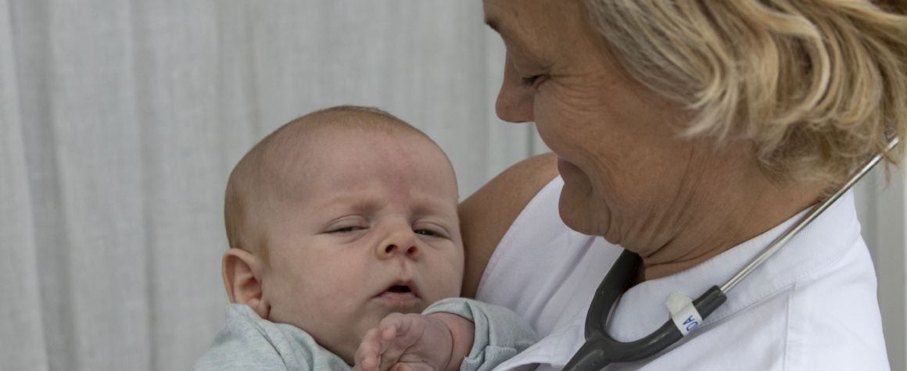

Ida Norgil
Speciallæge i pædiatri · PhD
Ida Norgil er uddannet læge fra Københavns Universitet i 1996 og har siden dedikeret sin karriere til børns sundhed og velvære. Med en ph.d.-grad, speciallægeanerkendelse i pædiatri og en særlig ekspertise inden for børneallergi og astma er hun en af Danmarks mest erfarne speciallæger inden for dette felt.
Efter mange år som afdelingslæge på Herlev Hospital valgte hun i 2019 at åbne sin egen klinik, Børne & Allergiklinikken, i Amagerbro Sundhedscenter i København S. Motivationen var at kunne tilbyde forældre og børn en mere personlig og grundig service end det er muligt i det offentlige sygehusvæsen.
Ida Norgil er kendt for sin rolige og empatiske tilgang og for altid at tage barnets og familiens bekymringer alvorligt. Hun tror på, at en god dialog og en grundig forklaring er lige så vigtig som selve behandlingen.
Uddannelse og karriere

Om klinikken
Børne & Allergiklinikken er beliggende i Amagerbro Sundhedscenter – et moderne sundhedscenter med god tilgængelighed og let adgang med offentlig transport.
Klinikken er indrettet med fokus på at skabe trygge og venlige rammer for børn og deres familier. Vi ved, at et lægebesøg kan virke skræmmende for et barn, og vi gør alt for at gøre oplevelsen så god som mulig.
Vi samarbejder tæt med praktiserende læger, sygehusafdelinger og andre specialister for at sikre den bedst mulige behandling til hvert enkelt barn.
Praktisk information
- Konsultation er gratis med henvisning fra din praktiserende læge
- Vi behandler børn og unge fra 0–18 år
- Telefontid: mandag–fredag kl. 08:00–09:00
- Beliggende i Amagerbro Sundhedscenter, 2300 København S
Vil du booke en tid?
Ring til os på 38 87 18 48 i telefontiden mandag–fredag kl. 08:00–09:00, eller læs om hvad der sker ved første konsultation.
Book konsultation